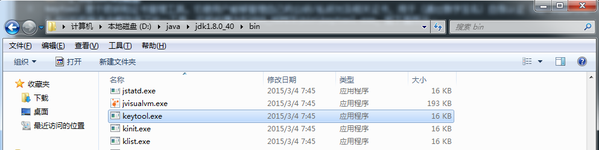

一、keytool的概念
keytool 是个密钥和证书管理工具。它使用户能够管理自己的公钥/私钥对及相关证书，用于（通过数字签名）自我认证（用户向别的用户/服务认证自己）或数据完整性以及认证服务。在JDK 1.4以后的版本中都包含了这一工具，它的位置为%JAVA_HOME%\bin\keytool.exe，如下图所示：

二、创建证书
创建证书主要是使用” -genkeypair”，该命令的可用参数如下：
范例：生成一个名称为test1的证书
Cmd代码：1
keytool -genkeypair -alias "test1" -keyalg "RSA" -keystore "test.keystore"
功能：
创建一个别名为test1的证书，该证书存放在名为test.keystore的密钥库中，若test.keystore密钥库不存在则创建。
参数说明：
-genkeypair：生成一对非对称密钥;
-alias：指定密钥对的别名，该别名是公开的;
-keyalg：指定加密算法，本例中的采用通用的RAS加密算法;
-keystore:密钥库的路径及名称，不指定的话，默认在操作系统的用户目录下生成一个”.keystore”的文件
注意：
1.密钥库的密码至少必须6个字符，可以是纯数字或者字母或者数字和字母的组合等等
2.”名字与姓氏”应该是输入域名，而不是我们的个人姓名，其他的可以不填
执行完上述命令后，在操作系统的用户目录下生成了一个”test.keystore”的文件，如下图所示：
三、查看密钥库里面的证书
范例：查看test.keystore这个密钥库里面的所有证书
Cmd代码：1
keytool -list -keystore test.keystore
四、导出到证书文件
范例：将名为test.keystore的证书库中别名为test1的证书条目导出到证书文件test.crt中
Cmd代码：1
keytool -export -alias test1 -file test.crt -keystore test.keystore
运行结果：在操作系统的用户目录(gacl)下生成了一个”test.crt”的文件，如下图所示：
五、导入证书
范例：将证书文件test.crt导入到名为test_cacerts的证书库中
Cmd代码：1
keytool -import -keystore test_cacerts -file test.crt
六、查看证书信息
范例：查看证书文件test.crt的信息
Cmd代码：1
keytool -printcert -file "test.crt"
七、删除密钥库中的条目
范例：删除密钥库test.keystore中别名为test1的证书条目
Cmd代码：1
keytool -delete -keystore test.keystore -alias test1
八、修改证书条目的口令
范例：将密钥库test.keystore中别名为test2的证书条目的密码修改为xdp123456
Cmd代码：1
keytool -keypasswd -alias test2 -keystore test.keystore
九、摘自
孤傲苍狼 — https://www.cnblogs.com/xdp-gacl/p/3750965.html